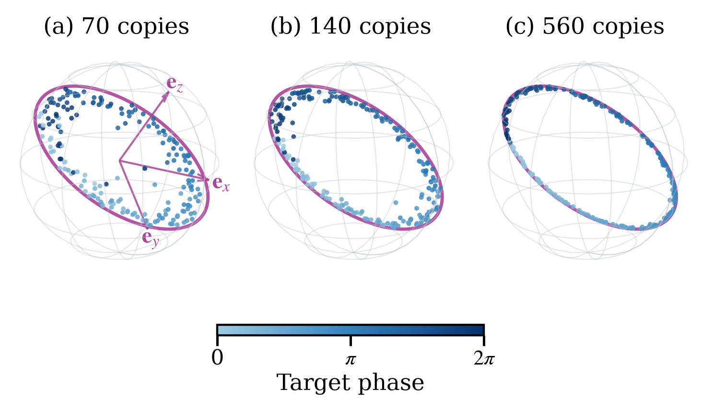
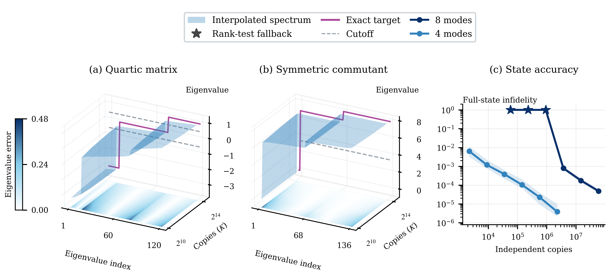

Supporting algebraic and statistical lemmas for the fermionic state-learning results are formalized in Lean in the accompanying code.
Abstract
We prove that unknown pure fermionic states prepared from disjoint-branch fixed-particle-number blocks can be reconstructed after general quadratic evolution, including pair creation and annihilation. For a fixed particle cap per block, adaptive or nonadaptive single-copy Gaussian measurements yield classical input and circuit descriptions with prescribed fidelity and confidence, using polynomial resources in system size and inverse infidelity. The adaptive procedure has the sharper copy guarantee. Connected quartic correlations and a covariance-compatible commutant identify the hidden blocks; local states are recovered from fresh measurements or a predetermined bounded-degree moment table. Stable branch recovery gives valid preparation descriptions. Neither particle-number conservation nor block homogeneity is required; no lower bound on branch weights or covariance gaps is assumed. A certified variant returns a passive preparation whenever one exists within the promised family, without advance membership information. On the full Gaussian orbit of paired magic states, quartic measurements alone suffice, with an explicit bound converting observable error into state error.
Problem
Learning an arbitrary n-mode fermionic pure state requires exponential resources. The question is whether states built from disjoint-branch, bounded-particle-number non-Gaussian blocks and then evolved by an unknown general quadratic (Gaussian) circuit, including pairing terms, can be learned efficiently.
Approach
Single-copy Gaussian measurements, adaptive or nonadaptive, are used to estimate covariance and connected quartic Majorana correlations. A covariance-compatible commutant then identifies the hidden block spaces. Local block states are recovered from fresh measurements or from a bounded-degree moment table, giving an explicit input state plus Gaussian circuit as the preparation description. Supporting algebraic and statistical lemmas are formalized in Lean.
Results
Both procedures achieve prescribed fidelity and confidence with copy and runtime costs polynomial in n and inverse infidelity for a fixed particle cap; the adaptive procedure has the sharper copy bound. A certified variant returns a passive preparation whenever one exists, and quartic measurements alone suffice on the paired-magic Gaussian orbit. A worst-case lower bound of Ω((n²+log(1/δ))/f) copies is proved, and numerical examples use one or two four-mode dimers.

Figure 2: Quartic reconstruction of singlet-phase states. Magenta marks the target circle; blue points are independent reconstructions, colored by target phase. Panel (a) marks the orthonormal directions \mathbf{e}_{x},\mathbf{e}_{y},\mathbf{e}_{z} of the logical Pauli coordinates. The projection retains leakage; Appendix D gives its geometry, setting and full-state errors.

Figure 3: Measured structure and full-state reconstruction. (a,b) Transparent surfaces interpolate eight-mode quartic and commutant spectra at four measured budgets, with K copies per quartic observable. Magenta gives the exact spectra; gray dashes mark decoder cutoffs on the same back plane. Base-plane colors interpolate absolute eigenvalue errors, from white (zero) to dark blue on a shared scale